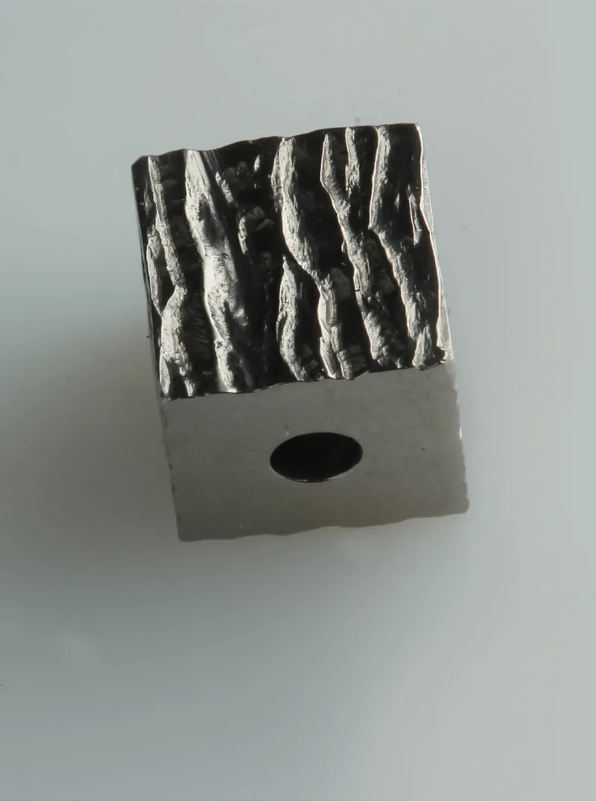

Samuele Silvestri, architect in Modena, Italy
Architectural research and design, from construction detail to urban scale. Drawing, virtual reality, co-design and compositional research shape a method grounded in listening and clarity.
Each project sets out to meet the challenges of contemporary space with effectiveness and innovation. After working in Mantua, Berlin and Rome, the studio is now based in Modena, Italy, designing and renovating apartments and commercial spaces.
The studio's work starts from close attention to context, to the quality of space and to the client's needs. A specialisation in design for historic sites and UNESCO settings allows every project to be approached with sensitivity and deep respect for what already exists.
Method
Every project starts with listening and with a survey of the existing space. Drawings, renders and virtual reality make it possible to see and discuss the design before work begins, and to choose layout, materials and light together with the client.
The studio then handles building permits, site supervision and the design of bespoke furniture, so the project stays in the same hands from the first idea to completion.
Where the studio works
The studio is based at Via Asiago 58 in Modena and works on projects throughout Italy. Recent work includes the interiors of Le Pietre, a new residential building in Castelfranco Emilia, the two apartments on Via Carteria and the Anita bar and restaurant, both in the historic centre of Modena, the Casa AD and Casa CM apartments, a villa in Casalgrande near Reggio Emilia, and the competition entries Spazio Persona in Fano and Mensa universitaria De Gennaro in Naples.
Jewellery and studies of form
Alongside architecture, the studio carries out experimental studies of elementary form with different surface treatments: research into materials, colour and light that takes the shape of jewellery, such as the Alberi series in titanium and the Cielo series in ceramic.
Collaborations
For architectural visualisation the studio works with VISION, a Modena studio specialising in photorealistic images and virtual-reality experiences. The interiors of Le Pietre were designed for Modena Ingegneria, with architectural design by TT Architettura; Via Carteria is being developed with Alessandro Orrea (geometra); Casa AD was designed with tilde studio.

Two apartments

Bar and restaurant

Residential interiors

Titanium jewellery
Get in touch
To talk about a project, write to info@samuelesilvestriarchitetto.com or call +39 366 493 8286. The studio is based at Via Asiago 58 in Modena and works throughout Italy.